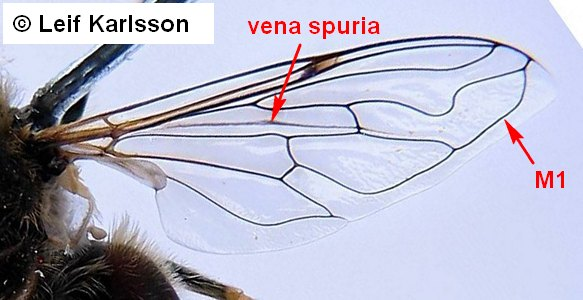
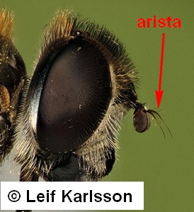
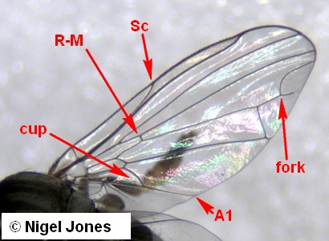
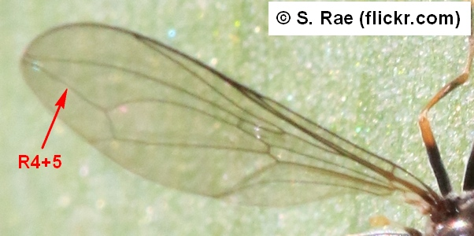
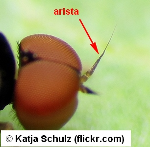
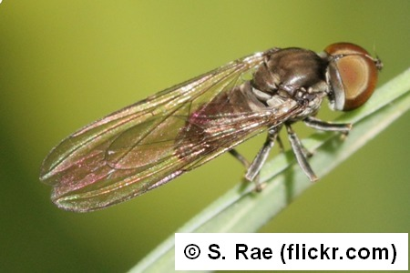

Key to subsections of Aschiza
1.
- Vein M1 turned forwards to meet unforked R4+5. Wing usually with a vein-like fold or "vena spuria" between R5 and M1 and/or terminal branches of M joining to form an ambient vein parallel to margin. Antennae with dorsal arista (except in a few wasp-mimicking genera).

Syrphoidea
Syrphidae
- Wing venation different to that above or wingless, and/or antenna with terminal stylus.

2
- Head large and strongly hemispherical or even spherical, with compound eyes almost meeting sagittally both above and below antenna1 bases. Vein R4+5 unforked, costa ending at wing apex. Antenna with dorsal arista.

Syrphoidea
Pipunculidae
- Head usually not hemispherical. Veins R4 and R5 usually distinct (R4+5 forked), costa continuing around the wing. Antenna with terminal stylus (also in cases of some Bombyliidae, where head hemispherical).
Platypezoidea